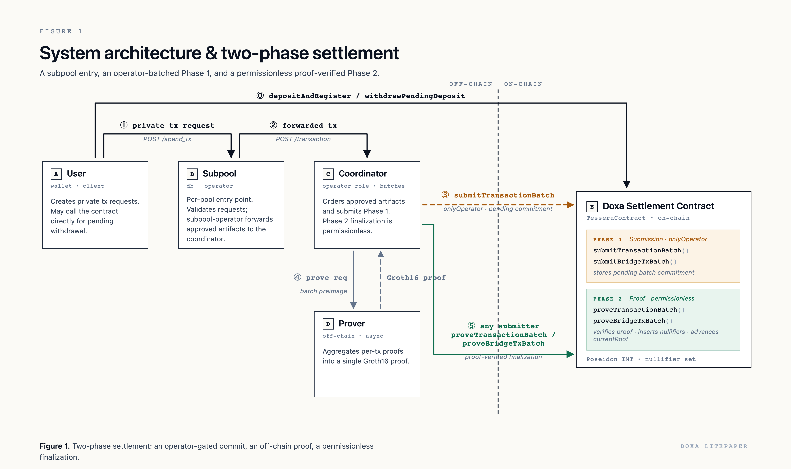
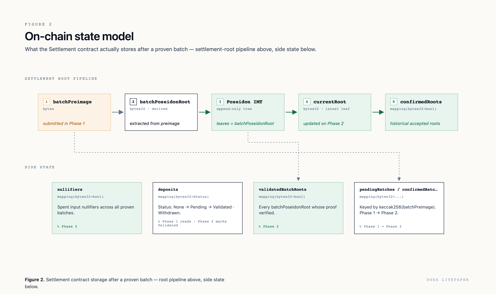
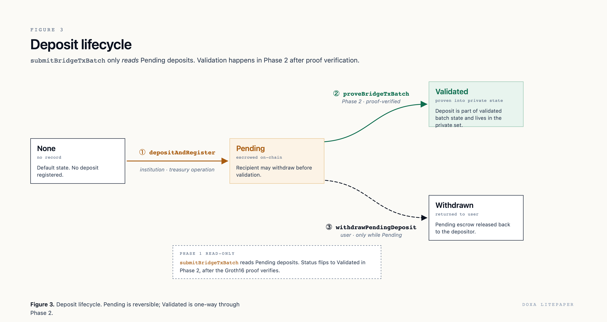
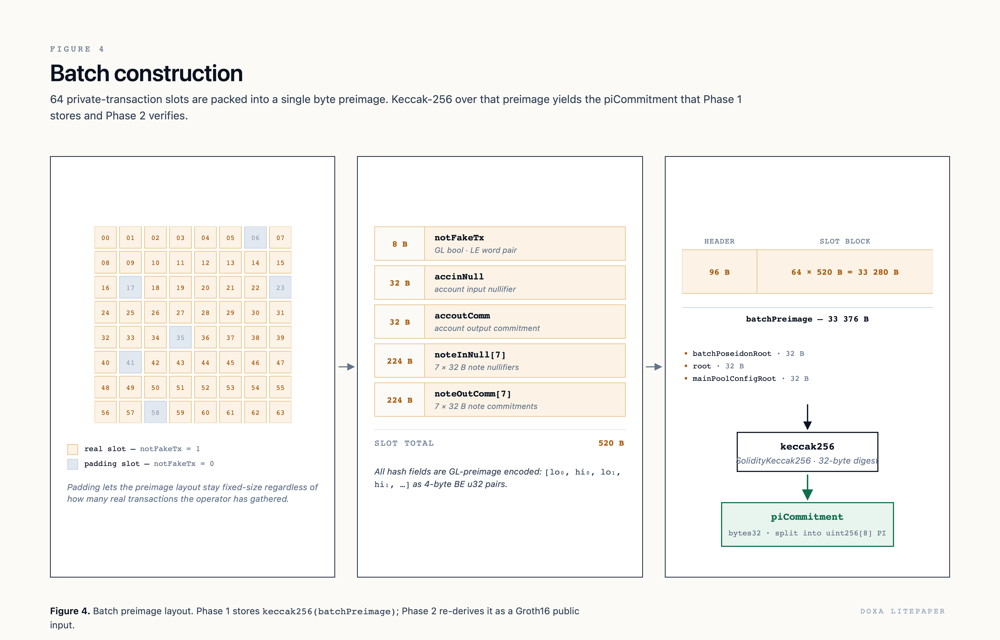
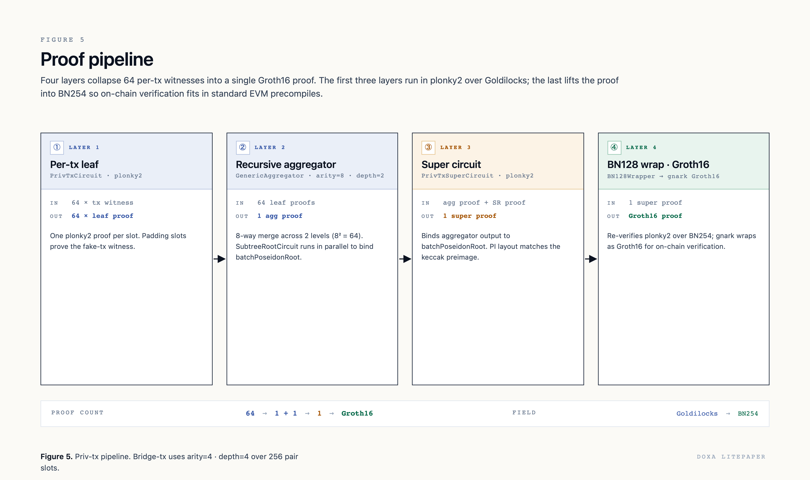
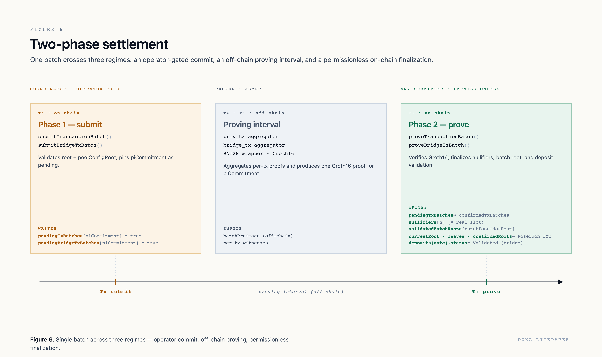

Doxa is a zero-knowledge settlement protocol that enables private stablecoin transfers on public blockchains. Value enters the shielded system through the settlement contract's deposit function. Once inside, balances are held in private accounts and transferred through committed notes whose contents are never published on-chain. Users generate zero-knowledge proofs for their transactions off-chain; a coordinator collects approved proof artifacts and orders them into fixed-size batches; and a proving pipeline aggregates each batch into a single validity proof that the settlement contract verifies on-chain. The contract tracks spent nullifiers and records compact batch commitments, but never learns private balances, note contents, counterparty identities, or institutional compliance records.
The architecture assigns each concern to a distinct participant. Users execute private transactions and generate proofs on their own clients. Subpools enforce institutional policy at the boundary, deciding which transactions are eligible for settlement. The coordinator orders approved proof artifacts into fixed-size batches and submits them to the settlement contract. A proving pipeline recursively aggregates per-transaction proofs, binds them to the exact ordered batch, and produces a single Groth16 proof for the on-chain verifier. The contract finalizes a batch only after that proof passes verification.
On-chain state is compact. One incremental Merkle tree stores batch roots; one mapping stores spent nullifiers. Each proven batch contributes exactly one leaf to the tree, and the hundreds of individual commitments inside that batch are compressed below the batch root, verifiable through membership proofs.
Stablecoins give institutions a programmable settlement asset that moves across public blockchain rails. The weakness is visibility. Every transfer exposes timing, amount, asset, and address relationships to anyone who can index the chain. Even with pseudonymous addresses, institutional patterns are linkable through repeated counterparties, recurring payment windows, deposit sizes, and operational cadence.
This leakage reveals treasury movement, settlement windows, liquidity needs, market-making behavior, customer relationships, and cross-border payment corridors. A competitor or analyst does not need to break cryptography to learn from this data. Correlation over time is sufficient.
Private chains reduce public leakage but fragment liquidity and require participants to trust a separate settlement environment. Mixers and generic anonymity sets hide transfers but destroy the compliance boundary that regulated institutions require. Doxa occupies the space between these models: settlement anchored to a public chain, transaction contents private, institutional policy enforced at the edge through subpools.
A private settlement system must hide state without hiding correctness. Users should not reveal notes, balances, account secrets, or counterparties. But the settlement contract must still reject invalid transitions, duplicate spends, forged deposits, and unauthorized exits.
Zero-knowledge validity proofs provide this boundary. A user proves that a private transaction consumed valid state, preserved balance constraints, respected authorization rules, and produced valid output commitments, all without revealing the witness. The verifier learns only that the statement is true.
The remaining challenge is scale. Verifying every transaction proof on-chain is prohibitively expensive. Doxa batches proofs and verifies one final proof per batch, amortizing the on-chain verification cost across dozens or hundreds of private transactions.
Batching is useful only if the batcher cannot alter the private state transition. In Doxa, the coordinator does not invent commitments or nullifiers. It receives proof artifacts, reads the public inputs that each proof exposes, orders those inputs into fixed-size batch slots, and constructs a byte-level preimage. The settlement contract then computes the Keccak digest of that preimage as the binding commitment. The final proof binds every slot, every nullifier, every output commitment, and every flag to that digest. If the coordinator changes the order or substitutes a value, the digest changes and a new proof is required.
This is the core accountability property: the coordinator controls inclusion and ordering, but it cannot make the contract accept an invalid transition without a valid proof for that exact batch.
Institutions need privacy from the public chain and from unrelated participants, but they also need internal accountability: customer files, transaction review, sanctions screening, source-of-funds records, and audit trails. Doxa does not try to become the compliance provider. It provides a cryptographic settlement substrate that institutions wrap with their own policy systems.
Subpools are the protocol abstraction for this. An account belongs to a subpool. A subpool commits its policy authority keys into a global configuration tree. Every transaction proof binds to the current configuration root, so subpool membership is part of the proven statement. The precise operational policy (who gets approved, how transactions are monitored, what records are kept) remains entirely institution-specific.
The architecture separates four concerns:
Private execution happens off-chain.
Policy happens at the subpool boundary.
Ordering happens at the coordinator.
Final correctness happens on-chain through proof verification.
Doxa settles on public blockchain infrastructure rather than requiring participants to join a private network. The public chain provides token escrow, proof verification, root history, nullifier tracking, and transparent settlement events. Private computation happens off-chain; final validity is enforced by the contract. The current implementation targets the EVM using BN254/Groth16 verification and Poseidon hashing over Goldilocks field elements, but the architecture generalizes to any chain with an escrow surface and a proof verifier.
The settlement contract never learns note contents, account balances, customer identities, transaction witnesses, or subpool review data. It receives compact commitments and proof outputs. It verifies that the proof corresponds to the submitted batch commitment, updates the global state root, marks nullifiers as used, and nothing more. The public chain sees token escrow movements, batch commitments, nullifier insertions, and root transitions. It does not see the private business meaning behind any of them.
Doxa is not a compliance oracle. It gives institutions a policy boundary before transactions enter the shared settlement flow. A subpool can run its own user database, approval service, monitoring workflow, audit log, and note delivery process. The protocol commits to subpool membership and approval authority, but it does not decide who satisfies an institution's policy. This separation is important for legal and operational clarity: Doxa provides proof-backed settlement infrastructure, and institutions remain responsible for their regulated workflows.
User activity is variable; proof circuits are easier to aggregate when they have a fixed shape. Doxa converts variable activity into fixed-size batches by padding unused slots with dummy proofs. Private transaction batches contain 64 proof slots, each contributing one output account commitment and seven output note commitments, for a total of 512 output commitments per batch. Bridge transaction batches contain 256 withdrawal slots and 256 deposit slots, each contributing one output account commitment, also totaling 512 per batch. The uniform 512-leaf batch subtree is a key design point: it gives the prover and contract a consistent binding object.
Confirmed state must be reconstructible from chain-authoritative data alone. The state service can replay proven batch events, fetch the original submission calldata, extract the batch root and nullifiers, and rebuild the local tree and nullifier set from scratch. Loss of a coordinator database cannot let anyone forge state. It may delay service, but confirmed roots and nullifiers remain derivable from the public contract.
The design goals above shape an architecture with a clear separation between off-chain computation and on-chain verification. This section introduces the participants, traces a transaction from deposit through finalization, and defines the visibility boundary between them.
Figure 1 shows the five active participants in the settlement flow, labeled A through E. The left side of the diagram is off-chain; the right side is on-chain. Two supporting components (the state indexer and the monitored token) are not shown in the diagram but complete the architecture.
(A) User is the wallet and client layer. The user creates deposits, constructs private transaction requests, and holds all account secrets, note secrets, and authorization keys. The user is the only participant that interacts with the settlement contract directly for deposit and pending withdrawal operations (step ⓪ in the flow).
(B) Subpool is the institutional entry point, combining a policy database with an operator service. It validates incoming transaction requests against institutional policy, including onboarding status, compliance checks, and transaction limits, then forwards approved artifacts to the coordinator.
(C) Coordinator is the operator role responsible for batch construction. It receives approved artifacts from one or more subpools, orders them into fixed-size batches, pads unused slots with dummy proofs, and submits the resulting batch preimage to the settlement contract in Phase 1. The coordinator may also submit Phase 2 in practice, but Phase 2 is permissionless by contract design. The coordinator controls liveness and ordering, not validity.
(D) Prover operates off-chain and asynchronously. It receives the batch preimage and the per-slot proof artifacts (the Plonky2 proofs already generated by user clients), runs the aggregation pipeline described in Section 9, and produces a single Groth16 proof bound to the stored PI commitment. The prover never sees private witnesses; those remain with the user clients that generated the leaf proofs.
(E) Doxa Settlement Contract is the on-chain component. It escrows the monitored token, stores deposit records and pending batch commitments, verifies Groth16 proofs, checks nullifier freshness, appends proven batch roots to an incremental Poseidon Merkle tree, and records confirmed tree roots in a historical mapping. The contract also maintains a global nullifier set that prevents double-spending.
The state indexer mirrors confirmed roots, batch roots, nullifiers, leaf indices, and deposit status from chain events, and can be run independently by any party. The monitored token is the single ERC-20 token that a given contract deployment escrows.
Settlement proceeds through six steps, shown in Figure 1. Step ⓪ is a direct user-to-contract interaction (on-chain). Steps ① and ② are off-chain interactions between the user, subpool, and coordinator. Steps ③ through ⑤ cross the on-chain boundary for batch submission, proving, and finalization.
⓪ Deposit and withdrawal. The user interacts with the settlement contract directly, without passing through the subpool. To deposit, the user constructs a deposit note commitment off-chain, then escrows tokens with the contract. To withdraw a pending deposit, the user calls the contract before the deposit has been validated. This direct interaction is the only point in the flow where the user communicates with the chain independently.
① Private transaction request. The user's client builds the transaction and sends a signature request to the subpool via the subpool's transaction endpoint. The subpool evaluates the request against institutional policy (onboarding status, compliance requirements, transaction limits) and, if approved, signs the transaction hash with its approval key. The user's client then generates the Plonky2 proof locally with the approval signature as part of the witness. This is the computationally intensive step.
② Forwarded transaction. Once approved, the subpool forwards the proof artifact to the coordinator via the coordinator's transaction endpoint. The artifact consists of the user-generated Plonky2 proof and its public inputs: the referenced state root, the configuration root, a real-or-dummy flag, nullifiers for consumed state, and commitments for new state. The private witness (balances, keys, Merkle paths) remains with the user and never leaves the client.
③ Batch submission (Phase 1). The coordinator collects approved artifacts from one or more subpools, orders them into a fixed-size batch, pads empty slots with dummy proofs, computes the 512-leaf batch subtree root, and constructs the full batch preimage. It then submits the preimage to the settlement contract in an operator-gated transaction. The contract validates the referenced roots, checks deposit preconditions for bridge batches, computes the Keccak digest of the preimage, and stores it as a pending batch commitment.
④ Prove request. The coordinator sends the batch preimage and the per-slot proof artifacts to the prover (D). The prover runs the full aggregation pipeline off-chain, recursively combining the individual Plonky2 proofs and producing a single Groth16 proof that is cryptographically bound to the PI commitment stored in step ③.
⑤ Proof-verified finalization (Phase 2). Any submitter holding the batch preimage and the Groth16 proof can finalize the batch on-chain. The contract re-derives the PI commitment from the submitted preimage, verifies the Groth16 proof against it, and if verification succeeds, applies all batch effects atomically: it inserts nullifiers from real slots, appends the batch root to the on-chain Merkle tree, advances the confirmed state root, and for bridge batches marks referenced deposits as validated.

The coordinator sees only the public inputs of each proof: referenced roots, the real-or-dummy flag, nullifiers, and output commitments. It does not see private witnesses, account identifiers, note plaintext, balances, or customer records. If a deployment gives the coordinator more information, that is a deployment choice, not a protocol requirement.
The subpool's visibility is a product decision. A subpool may see only proof artifacts and policy metadata, or it may operate a full institutional backend with user records, note delivery, viewing information, and audit records. The settlement contract is not the compliance system; the subpool is.
The public chain sees token escrow movements, pending and confirmed batch commitments, proof verification results, consumed nullifiers, appended batch roots, and deposit status transitions. It does not see note plaintext, private account state, account balances, counterparty identities, or subpool-local policy decisions.
To make the architecture concrete, consider a user Alice who wants to deposit 1,000 USDT into the shielded system and later send 100 USDT to Bob. The lifecycle proceeds in five stages.
Account creation. Before depositing, Alice must initialize a Doxa account. Her client generates a private identifier, derives authorization keys, and produces a zero-knowledge proof that transitions a fresh account (nonce 0, no keys) into an initialized account (nonce 1, spend and consume keys set). This proof is batched and settled like any other transaction. The resulting account commitment enters the on-chain state, though the account contents remain private.
Deposit. Alice constructs a deposit note commitment addressed to her account and escrows 1,000 USDT with the settlement contract. The deposit is now Pending on-chain. Separately, her client generates a deposit proof that takes her current account as input, adds 1,000 USDT to its asset state tree, increments the nonce, and outputs a new account commitment with the updated balance. When the bridge batch containing this proof is finalized, the deposit becomes Validated and Alice's account balance is cryptographically bound to 1,000 USDT.
Sending. To send 100 USDT to Bob, Alice's client builds a private transaction that consumes her current account and produces two outputs: a new account commitment with 900 USDT remaining in her asset state tree, and an output note of 100 USDT addressed to Bob's account address. The transaction requires two signatures before it can be proven: Alice signs with her spend key (authorizing the account consumption and outgoing transfers), and the subpool operator signs with the approval key (gating the transaction through institutional policy). If Alice is only consuming incoming notes without sending (a pure consume operation), and her account has consume authorization active, a consume key signature is required instead of the spend key. All signatures are verified inside the ZK circuit. Once collected, Alice's client generates the Plonky2 proof locally and submits the proof artifact to the coordinator for batching.
Receiving. Bob's subpool discovers the incoming note through the note delivery mechanism (the specific model depends on the deployment). Bob's client then constructs a private transaction that consumes both his current account and the received note. The proof outputs a new account commitment with his asset state tree balance increased by 100 USDT. Until Bob consumes the note, the value exists as a committed note in the batch subtree; after consumption, it exists as part of his account balance.
The pattern. Every state change follows the same structure: consume an input account (publish its nullifier), optionally consume input notes (publish their nullifiers), and produce a new output account and output notes (publish their commitments). The account's asset state tree is the authoritative record of balance; notes are ephemeral carriers that move value between accounts. The user's client generates the zero-knowledge proof for each transition before submitting it to the subpool.
The user lifecycle in Section 3.4 introduced accounts, notes, and nullifiers through a concrete example. This section defines each protocol object precisely: what it commits to, how many field elements it contains, and what role it plays in the settlement flow. The exact hash specifications are in Appendix A.
The protocol operates over the Goldilocks prime field with p = 264 - 232 + 1. Commitments are Poseidon hashes in sponge mode without padding. Every commitment is a tuple of four field elements (256 bits total). When these values cross the boundary to the EVM, each field element is encoded as two 32-bit words in little-endian order, producing a 32-byte representation that the contract can hash with Keccak.
A Doxa account is a private state container scoped to one subpool. It holds the user's private identifier, subpool membership, a nonce, spend and consume authorization keys, and an asset state tree that tracks per-asset balances across up to 1,024 distinct assets.
The account commitment binds all of these fields into a single Poseidon hash over 19 field elements: the private identifier (which is never shared), the subpool id (which identifies the policy domain), the root of the asset state tree (which commits all balances without revealing them), the nonce (which prevents replay), and the authorization keys (which control who can spend or consume the account). Accounts without explicit authorization keys use deterministic default placeholders so the commitment structure remains uniform. See Appendix A for the exact specification.
The resulting commitment is published as part of batch settlement, but the account contents it represents remain entirely private.
To receive notes, a user needs a shareable identifier that counterparties can address value to without learning the user's private state. The account address serves this purpose. It contains a subpool id and a public identifier. The public identifier is derived from the private identifier through a one-way hash with a domain separator, so it can be shared without revealing the underlying secret. The subpool id tells counterparties which policy domain the account belongs to, making inter-subpool transfers possible: a sender can address output notes to a recipient in another subpool because the address specifies the target.
A transaction creates new state (represented by output commitments) and consumes old state (by publishing nullifiers). An account nullifier marks an account state as consumed. It is a Poseidon hash over the account commitment and a nullifier key (itself derived from the private identifier). Because the nullifier depends on the commitment, consuming the same account state twice produces the same nullifier, which the contract rejects. Because the nullifier key depends on the private identifier, only the account owner can produce the correct nullifier. The settlement contract stores all used nullifiers in a global mapping; if a nullifier has already been inserted, the batch reverts.
Accounts hold balances; notes move value between them. A standard note is a private transfer object. It commits to a random note identifier, an amount, an asset id, a recipient account address, and a sender account address. The Poseidon commitment binds all of these into a single hash over 21 field elements. The recipient can later spend the note by proving ownership and revealing the corresponding note nullifier. The note commitment can be included in a batch root without exposing any of the note's contents.
A note nullifier marks a note as consumed. It is a Poseidon hash over the note commitment, the note's position in the commitment tree, and the owning account's nullifier key. The position binding prevents a single note from being claimed at two different tree positions. The contract stores note nullifiers in the same global mapping as account nullifiers.
Standard notes circulate within the shielded system; deposit notes bridge value into it from the public chain. A deposit note represents public assets entering the shielded system. It commits to a note identifier, a recipient account address, an amount, and an asset id (16 field elements total). Unlike standard notes, deposit notes are registered on-chain: the settlement contract stores the commitment alongside the escrowed value and tracks its lifecycle through pending, validated, and withdrawn states.
The objects above (accounts, notes, nullifiers, deposits) describe private state and its transitions. The subpool configuration describes the institutional policy layer that governs who can participate and under what rules. A subpool is a policy domain. Its configuration is committed in a two-level tree structure.
At the inner level, each subpool has a small configuration tree (depth 2, four leaves) with an approval key at index 0 and three reserved positions. The approval key is a Schnorr public key over the Goldilocks field. The root of this tree represents the subpool's policy configuration.
The approval key is the institution's primary enforcement mechanism. Every real private transaction proof includes an in-circuit Schnorr signature verification: the subpool operator signs the transaction hash with the approval private key, and the ZK circuit rejects the proof if the signature is invalid. This means no transaction from a subpool's accounts can be proven without the subpool's explicit cryptographic consent. The approval gate is enforced at the proof level, not at an API level, so it cannot be bypassed by any party.
At the outer level, a main pool configuration tree (depth 20, supporting over one million subpools) stores one leaf per subpool. Each leaf commits the subpool's configuration root alongside its subpool id. The root of this tree is a global parameter of the settlement contract. Every transaction proof binds to this root, which means the subpool's policy membership is part of the proven statement.
With the protocol objects defined, the next question is how the settlement contract stores and advances state. The answer is deliberately minimal: the contract maintains a single append-only tree, a single nullifier mapping, and a handful of lifecycle mappings, then compresses every batch into one tree leaf. This section describes that state model and how it connects to the two-phase settlement flow.
The on-chain state follows a five-stage pipeline, shown in the top row of Figure 2.
The pipeline begins with the batch preimage (1), which the coordinator submits in Phase 1 as raw bytes. At this point the contract only stores the Keccak digest; the remaining stages execute during Phase 2 after proof verification succeeds. The contract reads the batch Poseidon root (2) from offset zero of the preimage: this is the depth-9 Merkle root over the batch's 512 output commitments. That root is appended as a new leaf to the Poseidon incremental Merkle tree (3), an append-only structure whose leaves are the batch roots of every proven batch in the system's history. The tree update produces an updated current root (4), which represents the latest global state of the settlement system. Finally, this new root is recorded in the confirmed roots (5) mapping, a historical index of every root that has resulted from a successful proof verification.
Every batch must reference a root from this confirmed set in its preimage header, which prevents a proof from being finalized against unknown or fabricated state. There are no optimistic or speculative roots; the tree advances only after proof verification succeeds. The tree can grow to depth 32, supporting billions of batches over the lifetime of the contract.
Four additional state objects sit alongside the root pipeline (see Figure 2, bottom row). The nullifiers mapping tracks every spent nullifier across all proven batches; it is written during Phase 2. The deposits mapping tracks deposit lifecycle (None, Pending, Validated, Withdrawn); Phase 1 reads pending status for bridge batches, and Phase 2 marks deposits as validated. The validated batch roots mapping records every batch Poseidon root whose proof has been verified; it is written during Phase 2. The pending and confirmed batch mappings, keyed by the Keccak digest of the batch preimage, track the two-phase flow: Phase 1 creates the pending entry, Phase 2 transitions it to confirmed.
The batch root is the compression boundary between private commitments and public settlement state. Inside a private transaction batch, 64 proof slots each contribute one account commitment and seven note commitments, producing 512 output commitments. Inside a bridge transaction batch, 512 proof slots each contribute one account commitment, also producing 512 outputs. In both cases, these 512 commitments are organized into a depth-9 Poseidon Merkle tree whose root becomes the batch Poseidon root.
The public contract appends only this root. A user or indexer can later prove that a specific commitment belongs to a validated batch by providing a Merkle path of exactly nine siblings.
Double-spend prevention relies on the global nullifier mapping. When a private transaction batch is finalized, each real slot contributes one account nullifier and seven note nullifiers to the mapping. When a bridge batch is finalized, each real slot contributes one account nullifier. Before inserting any nullifiers, the contract pre-checks the entire batch: if even one nullifier has already been recorded, the transaction reverts atomically and no state is mutated. This all-or-nothing enforcement ensures that a batch either fully applies or leaves the contract state unchanged.
Three distinct roots appear throughout the protocol. The batch root is the Poseidon root over the 512 output commitments inside one batch. The global state root is the root of the on-chain tree whose leaves are batch roots. The main pool configuration root commits the active subpool policy configuration. Every batch preimage begins with a 96-byte header containing all three roots in fixed order, binding the batch to a specific snapshot of global state and policy.

The state model shows where batch roots and nullifiers end up on-chain. This section describes how value enters the shielded system in the first place: through deposit notes that escrow public tokens into the contract and are later validated into private state through a bridge batch proof.
To bring new value into the shielded system, a depositor constructs a deposit note commitment off-chain and submits it to the settlement contract along with a maximum token amount. The contract transfers the monitored token from the caller into escrow, measures the actual received amount by balance delta, stores the deposit record, and emits an event. The deposit is now pending: the tokens are locked, the commitment is recorded, and the deposit awaits inclusion in a bridge batch.
Delegated variants allow a third party to fund the escrow on behalf of a user, enabling relayer and permit-based flows. In all cases the result is the same: a pending deposit note in escrow.
A deposit moves through four states (see Figure 3): None (no record), Pending (escrowed on-chain), Validated (proven into private state), and Withdrawn (returned to user).
In transition ①, the user calls the deposit function directly. The contract escrows tokens and records the commitment as Pending. Funds are locked; the recipient may withdraw before validation.
In transition ②, a bridge batch proof is finalized in Phase 2. The contract marks the deposit as Validated. At this point the deposit is part of a validated batch and lives in the private set. This transition is one-way and proof-verified.
In transition ③, the recipient reclaims tokens while the deposit is still Pending. Only the recorded recipient can call this, and only before validation. The contract updates the status to Withdrawn before transferring tokens.
Phase 1 is read-only with respect to deposits: the bridge batch submission checks that referenced deposits are Pending but does not change their status. The status flips to Validated only in Phase 2, after the Groth16 proof verifies. This two-phase design ensures that deposits are consumed only when a valid proof exists for the entire batch.
Bridge transaction batches handle the boundary between public and private state. Each bridge batch has 512 proof slots split evenly: 256 withdrawal slots and 256 deposit slots. Withdrawal proofs expose asset ids, withdrawal amounts, and a withdrawal address alongside the standard account nullifier and output commitment. Deposit proofs expose the deposit note commitment, the destination address, the amount, and the asset id.
Unused slots in each half are padded independently with dummy proofs. The batch root is computed over all 512 output account commitments in slot order: withdrawals first, deposits second.

Once value is inside the shielded system, users transfer it through private transactions. Each transaction consumes one account state and up to seven notes, produces a new account state and up to seven new notes, and exposes only the minimum public values needed for the coordinator to build a batch. This section describes the transaction shape, the public input layout, and how output commitments map to batch leaves.
A private transaction proves a state transition from one input account and up to seven input notes to one output account and up to seven output notes. The proof checks spend authorization, note ownership, nullifier derivation for both account and notes, balance conservation across all consumed and created values, and policy membership through the main pool configuration root. The private witness (balances, keys, Merkle paths, note contents) remains entirely off-chain.
The proof exposes 73 public values: the referenced state root and configuration root (shared across all slots in a batch), a real-or-dummy flag, one account nullifier, one account commitment, seven note nullifiers, and seven note commitments. The first eight values are common batch inputs; the remaining 65 are per-slot unique inputs that populate the batch preimage. See Appendix B for the full layout.
Each private transaction slot contributes eight leaves to the batch subtree: one output account commitment followed by seven output note commitments. With 64 slots, the batch subtree has exactly 512 leaves. The coordinator arranges these in slot order; the prover computes the Poseidon Merkle root over all 512; and the settlement contract records that root.
A real-or-dummy flag distinguishes actual transactions from padding. Dummy proofs carry compatible roots and placeholder public inputs, allowing every batch to fill all 64 slots regardless of how many real transactions are included. The batch root includes both real and dummy outputs, but the contract inserts nullifiers only for real slots. This ensures that the batch shape is always uniform (critical for aggregation circuits) while dummy slots have no settlement effect.
A private transaction consumes one input account. Cross-subpool value movement happens through output notes: a sender in subpool A creates notes addressed to recipients in subpool B, because account addresses include a subpool id. The target subpool must then discover that notes exist. This can happen through encrypted note delivery, viewing keys, subpool-to-subpool forwarding, or a shared data availability layer. The delivery model affects privacy, auditability, and institutional responsibility boundaries, and is discussed further in Section 11.
Individual transaction proofs cannot be submitted to the chain one by one; the verification cost would be prohibitive. Instead, the coordinator collects approved proofs, arranges them into a fixed-size batch, and commits the exact arrangement through a byte-level preimage whose Keccak digest becomes the binding object for the entire settlement flow. This section describes how that preimage is constructed and what it contains.
The coordinator receives approved proofs, checks that they share compatible roots, chooses a slot ordering, pads the batch with dummy proofs, and constructs the batch preimage. It then submits the preimage to the settlement contract in Phase 1. The coordinator is trusted for availability and ordering, not for validity. It can delay, censor, or reorder eligible proofs, but it cannot cause the contract to accept an invalid state transition without a valid proof for that exact batch.
The batch preimage is the exact byte sequence that binds every element of the batch into a single Keccak commitment (see Figure 4).
For a private transaction batch, the 64 slots are laid out in a grid where real slots carry the actual transaction public inputs and padding slots carry dummy values with the same byte size. Each slot is 520 bytes: an 8-byte real-or-dummy flag, a 32-byte account nullifier, a 32-byte account output commitment, seven 32-byte note nullifiers (224 bytes), and seven 32-byte note commitments (224 bytes). All hash fields follow the Goldilocks encoding described in Section 4.1: each field element is split into two little-endian 32-bit words, producing 8 bytes per element and 32 bytes per four-element hash output.
The full preimage consists of a 96-byte header (batch Poseidon root, state root, and main pool configuration root, each 32 bytes) followed by the 64-slot block (64 x 520 = 33,280 bytes), totaling 33,376 bytes. Padding keeps the preimage fixed-size regardless of how many real transactions the operator has gathered.
The Keccak-256 digest of this preimage is the PI commitment. Phase 1 stores this 32-byte digest. Phase 2 re-derives it from the same preimage and splits it into eight 32-bit big-endian words as the Groth16 verifier's public input.
The protocol defines how an order is committed, not how the order is chosen. The coordinator has discretion over slot ordering. Possible policies include first-in-first-out per subpool, round-robin across subpools, signed inclusion receipts, batch deadlines, or public inclusion queues. These are product-level decisions that the protocol can accommodate without changes to the settlement or proof layers.

The batch preimage commits the order and content of a batch; the proof pipeline proves that every slot in that batch represents a valid state transition. The pipeline's job is to reduce dozens of individual Plonky2 proofs into a single Groth16 proof that the settlement contract can verify in one on-chain call, while ensuring that the proven statement matches the committed preimage exactly.
The pipeline operates in four layers (see Figure 5), each of which narrows the proof count while preserving the cryptographic binding to the batch preimage.
Layer 1: Per-transaction leaf. Each slot receives one Plonky2 proof that attests to the correctness of a single private transaction, deposit, or withdrawal. Padding slots prove the dummy-transaction witness so that every position in the batch has a valid proof regardless of actual transaction volume. A 64-slot private batch therefore produces 64 independent leaf proofs from 64 transaction witnesses.
Layer 2: Recursive aggregator. A generic recursive aggregator performs an 8-way merge across 2 levels (82 = 64), reducing the 64 leaf proofs into a single aggregated proof. In parallel, a subtree root circuit independently proves that the 512 output commitments hash to the claimed batch Poseidon root. These two computations share no dependencies and can run concurrently, producing one aggregation proof and one subtree root proof.
Layer 3: Super circuit. The super circuit takes the aggregation proof and the subtree root proof as inputs. It verifies both inner proofs, cross-checks that each slot's output commitments match the corresponding subtree leaves, asserts that all slots reference the same common roots, and computes the Keccak digest of the full batch preimage in-circuit. The public input layout of the super circuit matches the Keccak preimage exactly, ensuring that the proven statement corresponds to the committed batch. The super circuit outputs a single proof with eight public values representing the 256-bit Keccak digest.
Layer 4: BN128 wrap and Groth16. The super circuit's Plonky2 proof is re-verified over BN254 and wrapped as a Groth16 proof for on-chain verification through standard EVM precompiles. This final stage transitions the proof from the Goldilocks field to BN254, producing the proof object that the settlement contract receives and verifies.
Across the four layers, the proof count collapses from 64 independent leaf proofs down to two intermediate proofs (one aggregation, one subtree root), then to one super proof, and finally to a single Groth16 proof. The first three layers operate in Plonky2 over the Goldilocks field; the last layer lifts the result into BN254 for EVM compatibility.
For private transaction batches, the 64 per-slot proofs are aggregated through a recursive tree with arity 8 and depth 2 (82 = 64 leaves). The subtree root circuit proves the 512-leaf Poseidon Merkle root. The private transaction super circuit then verifies both proofs, cross-checks that each slot's eight output commitments match the corresponding subtree leaves, builds the Keccak preimage, and outputs the digest.
For bridge transaction batches, each of the 256 withdrawal-deposit pairs is first verified by a pair-leaf circuit that checks one withdrawal proof and one deposit proof together. The 256 pair proofs are then aggregated through a recursive tree with arity 4 and depth 4 (44 = 256 leaves). The subtree root circuit proves the 512-leaf Poseidon Merkle root, where leaves 0 through 255 are withdrawal account commitments and leaves 256 through 511 are deposit account commitments. The bridge transaction super circuit verifies both proofs, cross-checks the output commitments, builds the Keccak preimage, and outputs the digest.
The super circuit produces a Plonky2 proof over the Goldilocks field. This proof is wrapped in two stages: first into a BN128 representation, then into a Groth16 proof over the BN254 curve. The resulting proof consists of eight field elements, two commitments, and two proofs-of-knowledge, which is the standard input format for an EVM-based Groth16 verifier. The contract derives the expected public inputs by splitting the stored Keccak digest into eight big-endian 32-bit words, ensuring that prover and verifier agree on the exact encoding.

The proof pipeline produces a Groth16 proof; this section describes how the settlement contract consumes it. Settlement is split into two on-chain phases separated by an off-chain proving interval, giving the coordinator time to generate the proof without blocking the chain and allowing any party to finalize the batch once the proof is ready.
A single batch crosses three regimes (see Figure 6): an operator-gated on-chain commit at time T0, an off-chain proving interval between T0 and T1, and a permissionless on-chain finalization at T1. This separation exists because proof generation takes time. The coordinator commits the batch on-chain while the proving pipeline works. In practice the coordinator usually submits both phases, but the contract enforces the operator gate only on Phase 1.
At T0, the coordinator submits the full batch preimage to the settlement contract. The contract validates that the referenced state root appears in the confirmed roots history and that the configuration root matches the current accepted value. For bridge batches, it additionally checks that every real deposit slot references a deposit note that is currently pending.
If all checks pass, the contract computes the Keccak digest of the preimage and pins it as a pending batch commitment. The writes are minimal: the pending batch mapping is set for that PI commitment. Phase 1 does not verify any proof, does not append a batch root, does not advance the state root, does not insert nullifiers, and does not change deposit status.
Between T0 and T1, the proving pipeline runs off-chain. It takes the batch preimage and the per-slot Plonky2 proof artifacts as inputs, runs the private transaction or bridge transaction aggregator, wraps through BN128 and Groth16, and produces a single proof bound to the stored PI commitment. If the coordinator or prover fails during this interval, the batch remains pending on-chain with no state effect.
At T1, any party holding the batch preimage and proof submits Phase 2. The contract recomputes the Keccak digest, confirms that a pending batch exists with that commitment, derives the eight public inputs via the Keccak-to-public-inputs conversion, and calls the appropriate Groth16 verifier (one for private transaction batches, one for bridge batches). If verification fails, the call reverts and no state changes.
When the proof verifies, the contract applies the batch effects atomically. It transitions the batch from pending to confirmed. It pre-checks every nullifier in the batch for uniqueness, reverting the entire transaction on any conflict, then inserts all nullifiers from real slots. It records the batch Poseidon root in the validated batch roots mapping. It appends the batch root as a new leaf to the Poseidon incremental Merkle tree, which updates the current state root and records the new root in the confirmed roots history. For bridge batches, it additionally marks real deposit notes as validated. After finalization, the batch's commitments are part of the global state, its nullifiers are spent, and its root can be referenced by future batches.

The settlement flow treats subpools as opaque policy boundaries: a proof binds to a configuration root, and the contract checks that root, but neither the contract nor the coordinator needs to know what policy a subpool enforces. This section explains the concrete enforcement mechanism, what an institution operates, what it can see, and what remains unspecified.
The subpool's primary enforcement mechanism is the approval signature. As described in Section 4.8, every real private transaction proof includes an in-circuit Schnorr signature verification against the subpool's approval key. In practice, this means the institution reviews the transaction request, decides whether to approve it (based on whatever internal policy it enforces), and if approved, signs the transaction hash with its approval private key. The user's client then includes this signature as part of the witness when generating the ZK proof. If the signature is missing or invalid, the circuit rejects the proof and the transaction cannot enter any batch.
This gives the institution a hard veto over every outgoing transaction from its accounts. The veto is cryptographic: it is enforced inside the proof, not by an API gateway that could be circumvented. No transaction from a subpool's accounts can reach settlement without the subpool's explicit consent.
An institution running a subpool operates a policy service that sits between its users and the coordinator. At minimum, this service must hold the subpool's approval private key, receive transaction requests from users, evaluate each request against institutional policy (KYC status, transaction limits, sanctions screening, internal compliance rules), sign approved transactions, and forward the signed artifacts to the coordinator. Beyond this minimum, an institution may also run user onboarding, account registration, a note delivery service for incoming transfers, transaction monitoring, and an audit log. The protocol does not mandate the scope of these services; it mandates only that the approval signature is present in the proof.
Doxa does not perform KYC, KYB, sanctions screening, transaction monitoring, custody, brokerage, exchange, or payment transmission. These are institutional responsibilities. The protocol provides the cryptographic substrate (the approval gate, the configuration tree binding, the on-chain settlement finality) and institutions build their regulated workflows on top of it. This separation means that different subpools can enforce different policies without the protocol needing to understand or adjudicate between them.
Because the subpool signs each transaction, it necessarily sees the transaction hash and knows that a transaction occurred. If the institution's approval flow requires the user to submit transaction details (amounts, recipients) alongside the proof request, the subpool also sees that metadata. However, the protocol does not require the user to disclose private witness data to the subpool. In the most privacy-preserving deployment, users generate proofs locally and submit only the proof artifact and a signature request; the subpool sees the public inputs (nullifiers, commitments) but not the underlying account balances or note contents.
The coordinator sees less: only the proof public inputs and the batch metadata needed for ordering. It does not receive transaction details, approval signatures, or institutional policy decisions. Merging the subpool and coordinator roles is a deployment choice, not a protocol requirement.
The subpool automatically has access to every transaction hash it signed, the public inputs of every approved proof (which include nullifiers and output commitments), and the on-chain settlement events that confirm when batches are finalized. This forms a minimal audit trail: the institution knows which transactions it approved, when they settled, and can verify them against the on-chain state.
For a richer audit trail, institutions can require users to disclose additional data as a condition of approval: note amounts, recipient addresses, or viewing keys that allow the institution to decrypt note contents after the fact. The protocol supports but does not mandate these disclosure models. On-chain state alone is sufficient to verify global settlement integrity (no double-spends, all batch roots correctly proven), but institution-level audit trails require the off-chain records that subpools choose to retain.
When a user in subpool A sends a note to a user in subpool B, the target subpool must learn that the note exists so that the recipient can consume it. The source subpool can forward the note payload directly to subpool B. The user can deliver the note data to the recipient out-of-band. A shared data availability layer can publish note metadata that target subpools scan.
If a recipient does not want to accept a note, they can reject it within a private transaction: the circuit consumes the incoming note and automatically creates a mirror output note addressed back to the original sender. This is a per-transaction operation initiated by the account holder, not a subpool-level incoming filter.
A system that stores private state off-chain must account for failure. If a coordinator goes down, if a prover cannot complete, or if a user loses their local data, the protocol must define what can be recovered and from where. This section describes the recovery model and the data availability architecture.
Confirmed state can be rebuilt entirely from public chain data. The replay process fetches batch submission events and maps each commitment to its submission transaction. It fetches proven batch events and sorts them by leaf index. For each proven batch, it retrieves the original submission calldata, decodes the preimage, extracts the batch root and all nullifiers from real slots, inserts the root into the local tree, and records the nullifiers. After replaying all proven batches in order, the local state matches the on-chain state exactly. No off-chain database is required for settlement integrity.
If the coordinator fails before Phase 1, approved proofs may need to be resubmitted to another coordinator or rebatched. If the coordinator fails after Phase 1 but before Phase 2, the batch remains pending. Since Phase 2 is permissionless, any party with the batch preimage and proof can finalize it. If no one can produce the proof, the batch remains pending indefinitely.
Pending deposits referenced by unfinalized bridge batches present a related edge case. Phase 1 does not mark deposits as validated, so the pending withdrawal path remains available. If a user withdraws a deposit that was referenced in a pending bridge batch, that batch can no longer be finalized because the deposit precondition will fail on re-validation.
The settlement contract stores batch roots, and submission calldata is available through chain history. It does not store plaintext notes or private witnesses. Users need a way to discover and decrypt notes addressed to them and to obtain Merkle membership paths for their commitments.
The data availability model specifies who stores note payloads, how recipients discover notes, how subpools synchronize across institutional boundaries, how users recover after local device loss, and what data auditors can request. Settlement correctness is independent of data availability (the proofs and nullifiers guarantee no double-spending regardless), but user experience and institutional auditability depend on the delivery and storage layer operating correctly.
The protocol's security rests on three pillars: the soundness of the proving system, the binding property of the batch commitment, and the atomicity of the on-chain settlement. This section states the trust assumptions, identifies the trust boundaries between participants, and describes the guarantees that hold even when individual actors are compromised.
Assuming the Groth16 and Plonky2 proving systems are sound and the Poseidon hash function is collision-resistant, the settlement contract accepts a batch only if the final proof verifies against public inputs derived from the Keccak commitment. The contract does not trust the coordinator's claim that a batch is valid. It trusts the verifier.
The batch preimage binds every element (the batch root, referenced state root, configuration root, real-or-dummy flags, all nullifiers, all output commitments, and type-specific public values) into a single Keccak digest. Any change in slot order or field value changes the digest. The final proof binds to this digest, so no party can alter the batch contents after the proof is generated without invalidating it.
Double-spend resistance is enforced by the global nullifier mapping. The contract pre-checks every nullifier in a batch before inserting any of them. If any nullifier has already been used, the entire Phase 2 transaction reverts. Because the batch either fully applies or fully reverts, there is no risk of partial state corruption.
The contract rejects duplicate deposit note commitments at registration time. A pending deposit can be withdrawn only by its recorded recipient. Bridge batches can reference only pending deposits during Phase 1. Deposits become validated only after proof verification in Phase 2. The two-phase structure ensures that no deposit can be consumed by an unproven batch.
The coordinator is trusted for availability and ordering, not validity. It can exclude or delay transactions but cannot cause invalid state transitions. Users trust their subpool according to the deployment model: a subpool that receives private transaction data has greater visibility into user activity than one where users generate proofs locally and submit only the proof artifacts. The settlement contract must be independently audited. The proving system depends on circuit artifacts and verifier keys; production deployment requires reproducible artifact generation, checksums, and a clear upgrade governance path.
All commitments use Poseidon in sponge mode without padding over the Goldilocks field. Outputs are four field elements (256 bits).
| Field | Elements | Description |
|---|---|---|
| Private identifier | 2 | Secret account identifier, never shared. |
| Subpool id | 1 | Policy domain membership. |
| Account state tree root | 4 | Commits all per-asset balances. |
| Nonce | 1 | Prevents replay of consumed state. |
| Spend public key | 5 | Compressed key; default placeholder if unset. |
| Consume auth config | 1 | 1 if active, 0 otherwise. |
| Consume public key | 5 | Compressed key; default placeholder if unset. |
Total: 19 elements.
| Field | Elements | Description |
|---|---|---|
| Account commitment | 4 | The consumed account state. |
| Nullifier key | 4 | Derived from private identifier with domain separator 12. |
Total: 8 elements. The nullifier key is Poseidon(12, private_identifier[0], private_identifier[1]).
| Field | Elements | Description |
|---|---|---|
| Identifier | 2 | Random note nonce. |
| Amount | 8 | U256 as eight 32-bit limbs, little-endian. |
| Asset id | 1 | Token identifier. |
| Recipient subpool id | 1 | Target policy domain. |
| Recipient public id | 4 | Spend condition. |
| Sender subpool id | 1 | Source policy domain. |
| Sender public id | 4 | Reject condition. |
Total: 21 elements.
| Field | Elements | Description |
|---|---|---|
| Note commitment | 4 | The consumed note. |
| Note position | 1 | Position in the commitment tree. |
| Nullifier key | 4 | From the owning account. |
Total: 9 elements.
| Field | Elements | Description |
|---|---|---|
| Identifier | 2 | Random note nonce. |
| Recipient subpool id | 1 | Target policy domain. |
| Recipient public id | 4 | Destination account. |
| Amount | 8 | U256 as eight 32-bit limbs, little-endian. |
| Asset id | 1 | Deposited token identifier. |
Total: 16 elements.
| Field | Elements | Description |
|---|---|---|
| Public id | 4 | Poseidon(13, private_identifier[0], private_identifier[1]). |
| Subpool id | 1 | Policy domain of the account. |
| Range | Field | Elements |
|---|---|---|
| [0..4] | State root | 4 |
| [4..8] | Main pool config root | 4 |
| [8] | Real-or-dummy flag | 1 |
| [9..13] | Account input nullifier | 4 |
| [13..17] | Account output commitment | 4 |
| [17..45] | Input note nullifiers (7) | 28 |
| [45..73] | Output note commitments (7) | 28 |
| Range | Field | Elements |
|---|---|---|
| [0..4] | State root | 4 |
| [4..8] | Main pool config root | 4 |
| [8] | Real-or-dummy flag | 1 |
| [9..13] | Account input nullifier | 4 |
| [13..17] | Account output commitment | 4 |
| [17..21] | Deposit note commitment | 4 |
| [21..26] | Destination address | 5 |
| [26..34] | Amount | 8 |
| [34] | Asset id | 1 |
| Range | Field | Elements |
|---|---|---|
| [0..4] | State root | 4 |
| [4..8] | Main pool config root | 4 |
| [8] | Real-or-dummy flag | 1 |
| [9..13] | Account input nullifier | 4 |
| [13..17] | Account output commitment | 4 |
| [17..24] | Asset ids (7) | 7 |
| [24..80] | Withdrawal amounts (7) | 56 |
| [80..85] | Withdrawal address | 5 |
| Constant | Value | Meaning |
|---|---|---|
| Notes per transaction | 7 | Input and output note slots per private transaction. |
| Private batch size | 64 | Proof slots per private transaction batch. |
| Bridge batch size | 512 | Total proof slots (256 withdrawals + 256 deposits). |
| Batch subtree depth | 9 | Depth of the 512-leaf batch Poseidon subtree. |
| Batch subtree leaves | 512 | Output commitments per batch root. |
| Global state tree depth | 32 | Maximum depth of the on-chain batch root tree. |
| Account state tree depth | 10 | Per-account asset balance tree (1,024 assets). |
| Main pool config tree depth | 20 | Subpool registry (over 1M subpools). |
| Subpool config tree depth | 2 | Per-subpool authority key tree (4 leaves). |
| Goldilocks prime | 264 - 232 + 1 | Field used for all commitments and proofs. |
| Term | Definition |
|---|---|
| Account commitment | Poseidon hash over 19 field elements binding private account state. |
| Account nullifier | Poseidon hash over 8 field elements marking an account state as consumed. |
| Batch preimage | The byte sequence whose Keccak digest binds Phase 1 to the proof and Phase 2. |
| Batch root | Poseidon root of a depth-9 Merkle tree over 512 output commitments. |
| Bridge batch | A batch containing 256 withdrawal and 256 deposit proof slots. |
| Coordinator | The operator that orders approved proof artifacts into batches and submits settlement transactions. |
| Deposit note | Commitment over 16 field elements representing assets entering private state from public escrow. |
| Goldilocks field | Prime field with p = 264 - 232 + 1, used for all commitments and proofs. |
| Hash output | Tuple of four Goldilocks field elements (256 bits), the standard commitment representation. |
| Main pool config root | Root of a depth-20 tree committing all active subpool configurations. |
| Note commitment | Poseidon hash over 21 field elements representing private transferable value. |
| Note nullifier | Poseidon hash over 9 field elements marking a note as consumed. |
| PI commitment | Keccak digest of a batch preimage, the binding commitment for settlement. |
| Subpool | An institutional policy domain, committed in the main pool configuration tree. |
| Super circuit | Final aggregation circuit that cross-checks proofs and computes the PI commitment. |
| Validated batch root | A batch root that has been proven and appended to the on-chain tree. |
This litepaper is provided for technical and informational purposes only. It is not legal, regulatory, tax, accounting, investment, or financial advice. It is not an offer to sell or a solicitation to buy any token, security, financial instrument, or regulated product.
Doxa is protocol infrastructure. It does not itself perform KYC, KYB, sanctions screening, transaction monitoring, custody, brokerage, exchange, payment transmission, or other regulated financial services. Institutions, subpool operators, and integrators are responsible for determining whether their use of the protocol is lawful in each relevant jurisdiction, obtaining any required licenses or approvals, and implementing their own compliance controls.
Features described as planned or under development may be modified, delayed, or not released. Performance figures, implementation-status statements, and security properties are preliminary unless independently audited or accompanied by reproducible benchmarks.